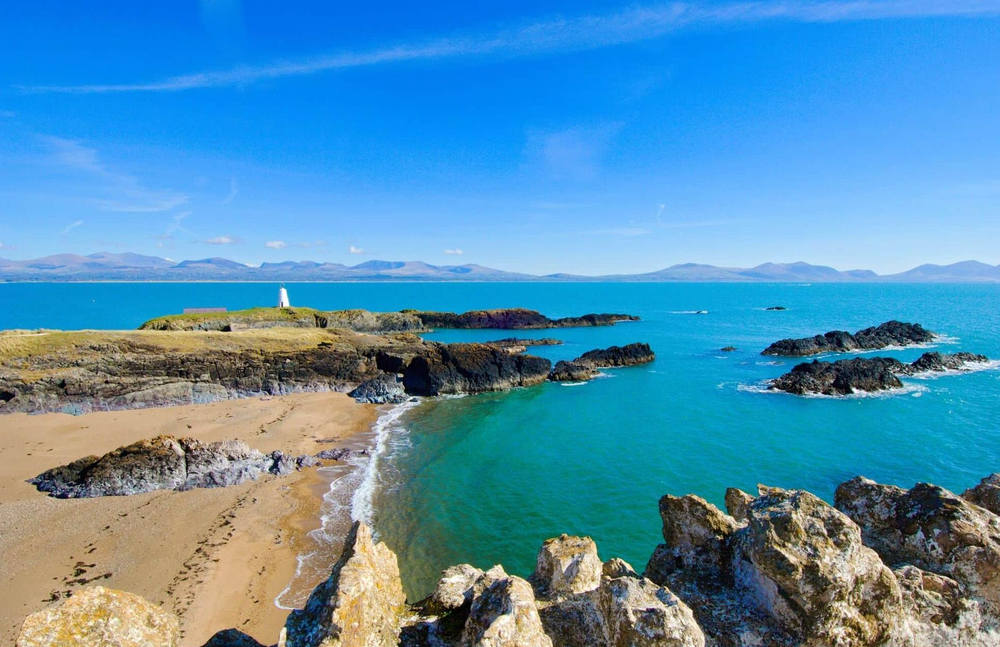
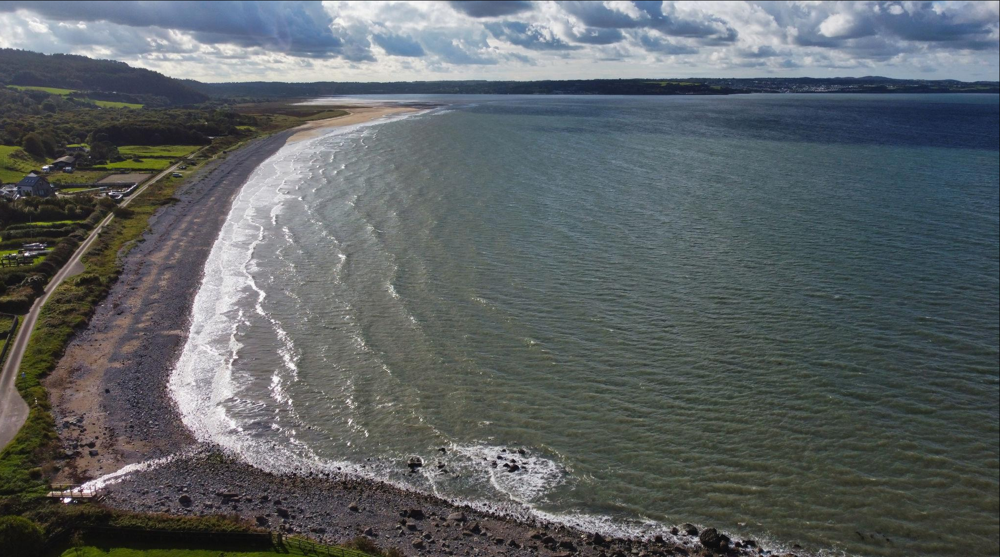
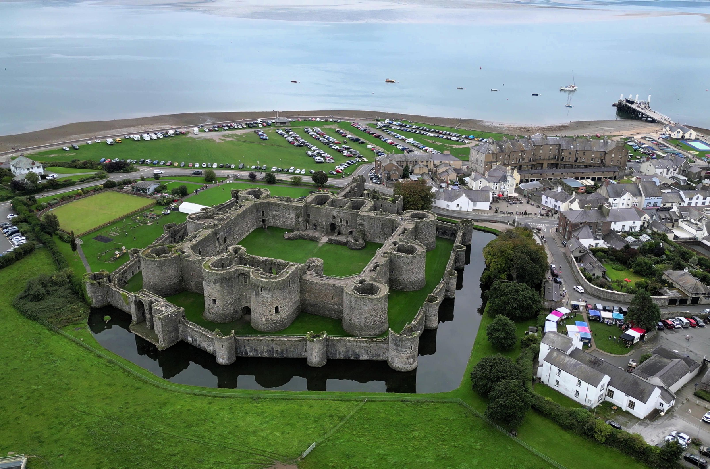
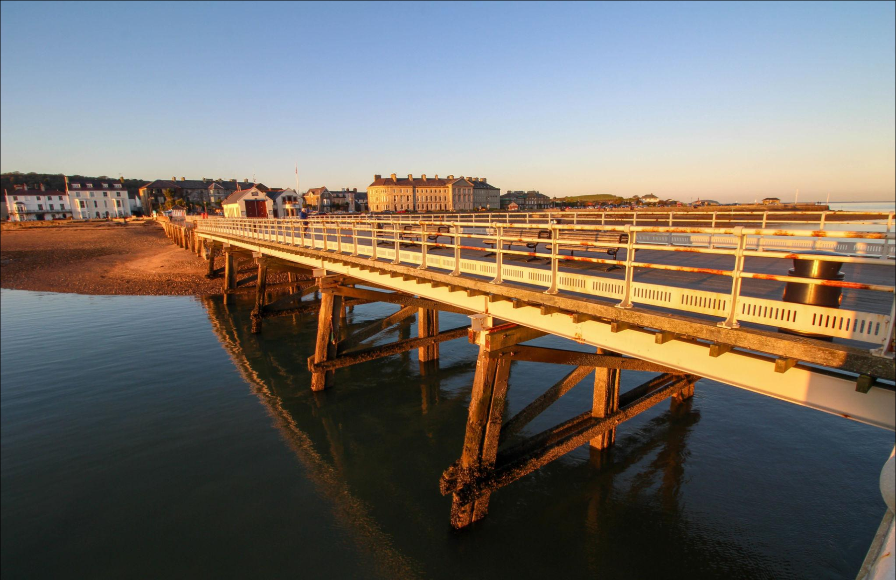
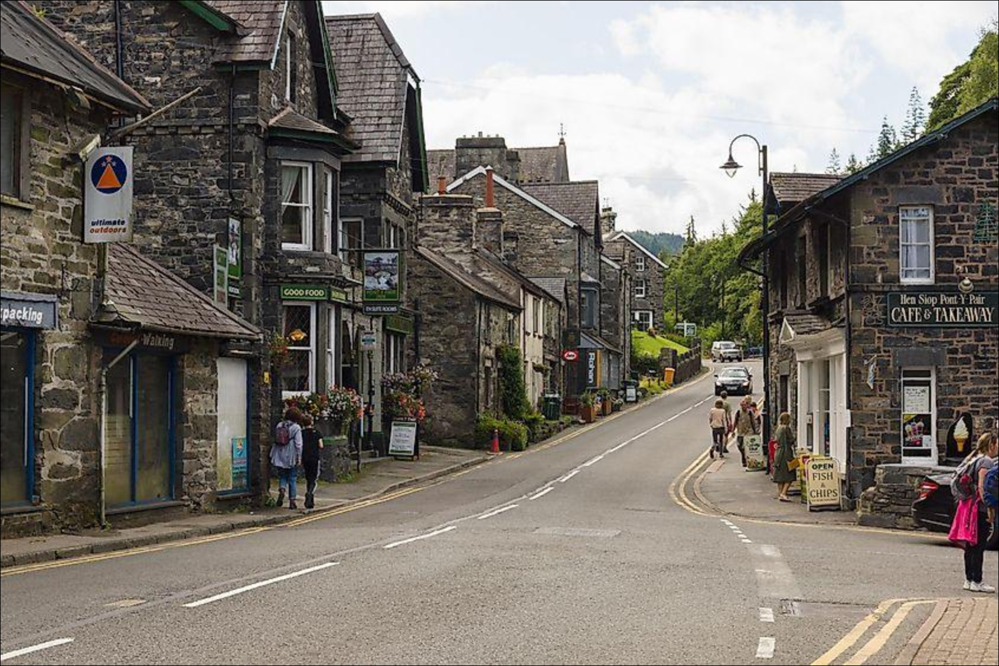
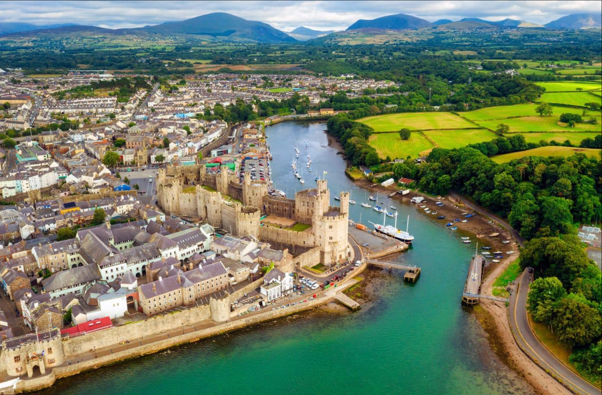
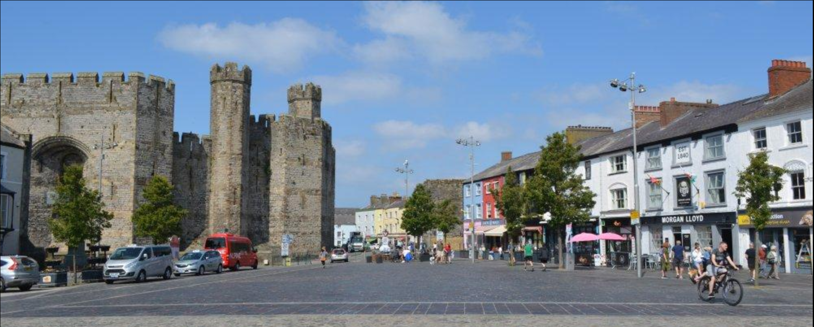
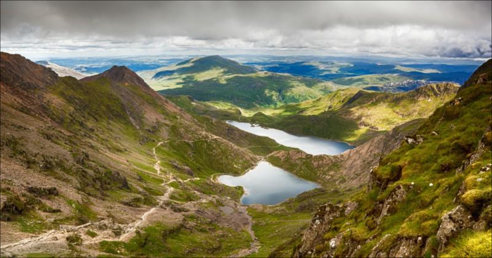
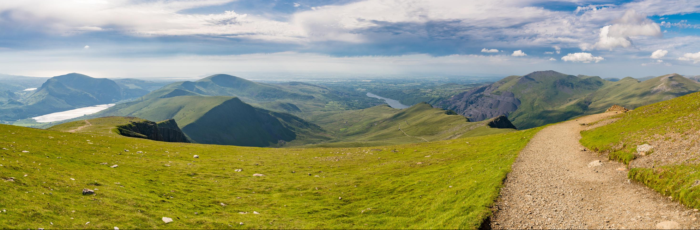

Destinations in North Wales
North Wales has many beautiful places to explore, from mountains and beaches to historic towns and castles.
Popular Destinations


Anglesey
Anglesey, known in Welsh as Ynys Mon, is the largest island in Wales and is famous for its beautiful beaches, dramatic coastline, and peaceful countryside. The island is connected to the mainland by the Menai Bridge, making it easy for visitors to explore.
The island offer over 125 miles (200km) of stunning coastal paths, where visotors can enjoy spectacular sea views, wildlife, and picturesque villages. Popular beaches such as Newborough Beach, Benllegch Beach, and Rhosneigr are perfect fo relaxing, swimming, and water sport.
Anglesey is also home to many historic landmarks, including Beaumaris Castle, a UNESCO World Heritage Site built by King Edward I in the 12th century. Visitor can also explore South Stack Lighthouse, one of the most famous landmark in North Wales, where they can enjoy breathtaking cliff views and watch seabirds, including puffins during the breeding seasons.
The island has a rich Welsh Culture, delicious local seafood, traditional markets, and friendly communities. Whether you enjoy history, nature, outdoor activities, or simply relaxing by the sea, Anglesey offers a memorable experience for visitors of all ages.


Beaumaris
Beaumaris is a historic seaside town on Anglesey, famous for its castle, attractive waterfront and views across the Menai Strait.
Beaumaris is a charming historic seaside town on the Isla of Anglesey, famous for its beautiful waterfront, charming streets, and relaxing atmosphere. It offers stunning views across the Menai Strait towards the mountains of Snowdonia.
Visitors can enjoy a relaxing walk along the picturesque seafront, browse independent shops and cafe's, or take a boat trip around the Menai Strait. The town also hosts local events and markets throughout year, offering a great opportunity to experience Welsh Culture and hospitaly.
With its rich history, beautiful scenary, and friendly atmosphere, Beaumaris is a perfect destination for visitors looking to experience the culture and natural beauty of North Wales.


Betws-y-Coed
Betws-y-Coed is a picturesque village surrounded by forests, rivers and waterfalls, making it popular with outdoor visitors.
Betws-y-Coed is often called the Gateway to Eryri (Snowdonia) National Park. Surrounded by forests, rivers, and mountains, it is one of the most picturesque villages in North Wales and a popular destination for nature lovers and outdoor enthusiasts.
Visitors can enjoy scenic walks, explore independent shops and cafés, or visit nearby attractions such as Swallow Falls, Pont-y-Pair Bridge, and Gwydyr Forest. Whether you enjoy hiking, cycling, or simply relaxing in beautiful surroundings, Betws-y-Coed offers something for everyone throughout the year.
Betws-y-Coed is also a great place to experience local Welsh culture and hospitality. The village has charming gift shops selling handmade crafts, local artwork, and traditional Welsh products. Throughout the year, visitors can enjoy seasonal events, cosy accommodation, and welcoming restaurants serving delicious local cuisine, making Betws-y-Coed an ideal destination for both day trips and longer stays.


Caernarfon
Caernarfon is a historic town in North Wales, well known for its impressive castle, waterfront and rich Welsh heritage.
Caernarfon is a historic town on the north-west coast of Wales, best known for its impressive medieval castle and rich Welsh heritage. The town offers a unique combination of history, culture, and beautiful waterfront views, making it one of the most popular tourist destinations in North Wales.
Visitors can explore the magnificent Caernarfon Castle, walk along the ancient town walls, and stroll through the charming streets filled with independent shops, cafés, and restaurants. The harbour also provides lovely views across the Menai Strait towards Anglesey, creating a relaxing atmosphere for visitors of all ages.
Caernarfon is also home to several cultural events and festivals throughout the year, celebrating Welsh traditions, music, and language. Whether you are interested in history, sightseeing, or enjoying local food, Caernarfon offers an unforgettable experience for everyone visiting North Wales.


Snowdonia
Snowdonia, also known as Eryri, is famous for its mountains, lakes and walking trails and is a popular destination for outdoor adventures.
Snowdonia (Eryri National Park) is one of the most spectacular natural attractions in North Wales, famous for its breathtaking mountains, peaceful lakes, and beautiful walking trails. The park is home to Yr Wyddfa (Snowdon), the highest mountain in Wales, making it a popular destination for hikers and nature lovers.
Visitors can also enjoy activities such as cycling, climbing, kayaking, and scenic train rides to the summit. With its stunning landscapes, charming villages, and rich Welsh heritage, Snowdonia offers an unforgettable experience for anyone exploring North Wales.
Throughout the year, Snowdonia offers something different in every season. Spring and summer bring colourful wildflowers and ideal weather for outdoor adventures, while autumn transforms the valleys into beautiful shades of gold and red. In winter, the snow-covered peaks create stunning scenery, making the national park a favourite destination for photographers and visitors looking to experience the natural beauty of North Wales.
Explore North Wales
Watch this video to discover the beauty of North Wales.
Watch 21 Top Places to visit in North Wales on youtube